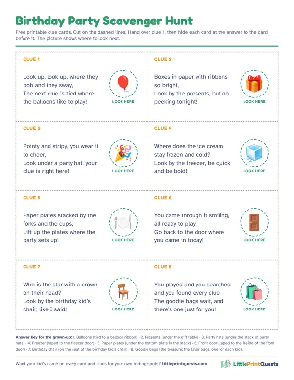

Birthday party scavenger hunt for kids
A treasure hunt is the party game that keeps a room full of 3 to 8 year olds busy, happy and moving for twenty minutes. Here are eight birthday clues you can use today, how to run a hunt with a whole group, and printable versions with the birthday kid’s name on every page.
Make a personalized party hunt8 free rhyming clues
Hide each clue at the answer to the clue before it. Hand the first one to the birthday kid, and put the goodie bags at the end.
Clue 1
Look up, look up, where they bob and they sway,
Answer: Balloons. Hide it: Tied to a balloon ribbon.
The next clue is tied where the balloons like to play!Clue 2
Boxes in paper with ribbons so bright,
Answer: Presents. Hide it: Under the gift table.
Look by the presents, but no peeking tonight!Clue 3
Pointy and stripy, you wear it to cheer,
Answer: Party hats. Hide it: Under the stack of party hats.
Look under a party hat, your clue is right here!Clue 4
Where does the ice cream stay frozen and cold?
Answer: Freezer. Hide it: Taped to the freezer door.
Look by the freezer, be quick and be bold!Clue 5
Paper plates stacked by the forks and the cups,
Answer: Paper plates. Hide it: Under the bottom plate in the stack.
Lift up the plates where the party sets up!Clue 6
You came through it smiling, all ready to play,
Answer: Front door. Hide it: Taped to the inside of the front door.
Go back to the door where you came in today!Clue 7
Who is the star with a crown on their head?
Answer: Birthday chair. Hide it: On the seat of the birthday kid’s chair.
Look by the birthday kid’s chair, like I said!Clue 8
You played and you searched and you found every clue,
Answer: Goodie bags. Hide it: The treasure: the favor bags, one for each kid.
The goodie bags wait, and there’s one just for you!
Free printable clue cards
All 8 clues on one sheet with picture hints for pre-readers, dashed cut lines and an answer key for the grown-up doing the hiding. Print it, cut it, hide it.

Download the free printable (PDF)
Running a hunt with a group
- Everybody finds one. Count the clues against the guests. With eight kids and eight clues, each kid gets a turn to grab a card, so the fastest runner doesn’t find them all.
- Take turns reading. Readers read the rhyme out loud; little ones get to shout the answer or lead the group to the spot.
- Two teams for big groups. Over ten kids, make two teams with their own color of cards and start them at different clues. Both trails end at the same treasure.
- A grown-up at the back. One adult leads, one walks behind to collect stragglers and keep the youngest guests in the game.
When to play it
Right after everyone arrives and before cake. Kids are fizzy at the start of a party, and a hunt gives that energy somewhere to go. It also covers late arrivals: a guest who walks in at clue three just joins the trail.
Match it to the party theme
Every themed hunt comes with its own story to read before the first clue, so a dinosaur party starts with a fossil emergency and a unicorn party with a missing rainbow. Pick the party’s theme:
- Dinosaur
- Superhero
- Pirate
- Outer Space
- Princess & Knights
- Unicorn
- Mermaid
- Construction
- Pet Vet
- Easter
- Halloween
- Christmas
- Valentine’s
- Firefighter
- Ice Kingdom
- Race Car
- Pizza Shop
- Burger Shop
- Grocery Store
- Post Office
- Library
- Police Station
- Dentist
- Pet Shop
- Coffee Shop
- Italian Restaurant
- Auto Shop
- Play Kitchen
- Doctor
- Puppet Theater
- Secret Agent
- Dress-Up
- Ice Cream
- Airport
Want the whole party printed?
A party pack has invitations, thank-you cards, cupcake toppers, favor tags and a birthday banner, all with the birthday kid’s name. Pair it with a personalized hunt for the main game. It arrives by email in minutes, so it works even for a party this weekend.
Make a personalized party hunt
Questions
How many clues should a birthday scavenger hunt have?
About one clue per guest, between six and ten. That gives every kid a find and takes 15 to 25 minutes.
What do you put at the end of a birthday scavenger hunt?
The goodie bags work best, one per kid, so nobody feels the birthday kid won the prize. Small wrapped treats or the cake itself also make a good finish.
Can I run a party scavenger hunt in a small apartment?
Yes. Use the apartment spots every home has, like the couch, the fridge and the bathtub, and zig-zag between rooms so the trail feels longer.
More hunt ideas
- Ages 3 to 5
- Ages 6 to 8
- Thanksgiving hunt
- Classroom hunt
- Apartment Scavenger Hunt
- Indoor Scavenger Hunt for a House
- Backyard Scavenger Hunt
- Dinosaur hunt
- Superhero hunt
- Pirate hunt
- Outer Space hunt
- Princess & Knights hunt
- Unicorn hunt
- Mermaid hunt
- Construction hunt
- Pet Vet hunt
- Easter hunt
- Halloween hunt
- Christmas hunt
- Valentine’s hunt
- Firefighter hunt
- Ice Kingdom hunt
- Race Car hunt
- Pizza Shop hunt
- Burger Shop hunt
- Grocery Store hunt
- Post Office hunt
- Library hunt
- Police Station hunt
- Dentist hunt
- Pet Shop hunt
- Coffee Shop hunt
- Italian Restaurant hunt
- Auto Shop hunt
- Play Kitchen hunt
- Doctor hunt
- Puppet Theater hunt
- Secret Agent hunt
- Dress-Up hunt
- Ice Cream hunt
- Airport hunt